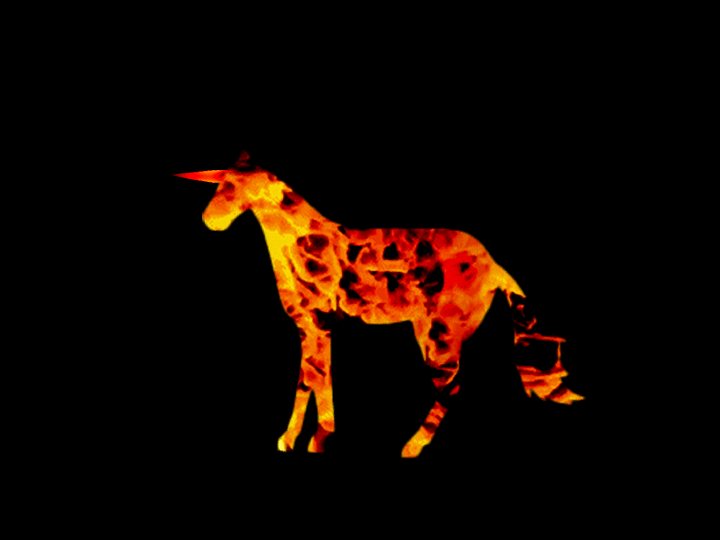

My work, titled Dandelion, is a digital drawing. The titular flower has always been a source of inspiration, from its stubborn growth in places it shouldn't, the unabashed brightness of its bloom, and the inherent hope of the wishes it carries in its seeds. To me, dandelions represent the spirit of coming "Up From the Ashes," of overcoming obstacles, of picking one's self back up, and of growth. In this piece, the body represents things I've left behind, my past mistakes, parts of myself, and hangs there, buried and broken and gray. But up from it, through the roots, there are flowers above ground, there is growth and new life and light. My hope for myself is that I would continue to grow, and be informed, but not limited, by who I was.
“Rising from the ashes” is a phrase I associate with resilience and pushing through difficult times; “keep on” was named with the intention of showcasing that. This composition for solo piano begins slowly, and even as it speeds up into something more intense, is interspersed with slower, sweet moments. I think of the faster sections, the jarringness of the higher notes especially, as a fight or a struggle, and it’s only after working through them that you get to the more soothing melodies. The piece ends the same way it begins, with the calm after a storm.
This piece was made to depict how, in the wake of destruction left by colonizers, cultures rise up and reclaim their place. This piece was painted to resemble the Florence Cathedral, representing Italian colonizers, and the Rock-Hewn Churches of Lalibela, a UNESCO World Heritage Site in Ethiopia. In this, the Florence Cathedral is crumbling down, to the persisting culture and heritage represented by the Rock-Hewn Churches. This piece was also made to raise awareness about Yekatit 12, a massacre and imprisonment of Ethopians that occurred in 1937. While Italian sources claimed a few hundred were killed, it's estimated that about 20% of the population of Addis Ababa, or 19,200 were killed during this time. History often glorifies European colonization as a realization of culture, however, it's important to realize that original culture does persist, despite many attempts to erase it.
The first thought that comes to mind when hearing of the theme Up From The Ashes is the mythological creature from many stories that have been told and retold for generations: the Phoenix, which is often depicted as a majestic bird that can die in a show of flames before being reborn from the decomposition of its own ashes. Society tends to value social ascension as symbolized by this rebirth of the Phoenix, for even the ideal of the American Dream is representative of upwards social mobility in a Rags-to-Riches type phenomenon. However, it is often expected that this rise to "success" will come out of nowhere, and sometimes people even frequently believe they will never be able to rise when they are experiencing tougher times. This song is a reminder that tough times do occur and it may seem nearly impossible to get out of the "abyss", but a rise cannot exist without a fall and even a phoenix cannot be reborn from the ashes without first dying. Therefore it is important to remember that regardless of how difficult it may seem at times to achieve a goal, never give up or lose sight of the finish line, for things can only get better with enough effort put in. This song serves as a message to keep trying because eventually efforts will pay off and is representative of all the trials and tribulations people have to go through in order to make that rise "up from the ashes."

I decided to make a gif in photoshop of a burning unicorn for the "Up from the Ashes" theme. I created two different versions of the image during my process. Thank you for looking at my art.
Burning Feathers is a folk-song like piece that frequently utilizes a single melody line and a single harmony line to convey a very raw message. Its use of unconventional "duet" combinations serves to highlight the melancholy present in its earlier sections, while the oboe maintains the reedy sound in conjunction with the baritone throughout. The song itself details a quick narration, which is evident in its quick conclusion. No segments are particularly fiery, as the circumstances of narration tend to dull edges present in stories. I hope you enjoy Burning Feathers!
When I think of "up from the ashes," I imagine life emerging from a world of despair and darkness. It originates from a place where nobody expects it to come from. Not only does it survive, but it also grows and flourishes. This is what I depicted in my painting. At four different times yet in one desolate place, a flower pops out of the ground and grows. The rising moon is in sync with the flower's growth, representing the watching world as a person climbs out of the ashes. The colors of the sky slowly change from a dark red to a beautiful blue as the darkness fades away, which depicts how someone who picks themselves up is responsible for changing the world around them. In the fourth panel, butterflies emerge from the fully-bloomed flower, representing the pride and hard work of a person who defies odds and arises from darkness.
“Refresh” stems from the phoenix imagery of ‘rising from the ashes.” I wanted the piece to have a refreshing sound for its audience, but also to show that idea of something being reborn, or refreshed, after death. The first, more light-hearted melody represents rejuvenation, and after the mellow middle section, is repeated with more energy and complexity near the end of this composition for solo piano. The ending is based off of that same melody, another form of ‘rebirth.’ The piece finishes with a final element of transformation, one that transitions it from a minor to major sound: a Picardy third.

I interpreted the theme rising from the ashes to mean reaching for new beginnings. I created this piece digitally with the intent of showing an outstretched hand from the perspective of the eyes of the being attached. I wanted to convey a sense of wonder and longing through this worm's eye view. I chose to make certain parts blurry (i.e. the moon, arm, and certain patches of stars) in order to make the hand the focal point. This also helps to create depth in the background, a balance of the areas with more concentrated stars and areas with less, and a loose and unbound mood throughout this piece.
Downpour is a (rigid-)swing jazz work detailing a dreary yet peaceful journey through a region littered with volcanic ash. The journey begins with a ray of hope (which is the upbeat 4-measure introduction) and proceeds into a stabilizing two-part melody with variations. Much in the taste of such works of art, Downpour frequently introduces a muddy sound which is to be representative of the journey it documents. The use of instruments such as the acoustic guitar and the Lo-Fi drumset and the incorporation of subtle solos further this feeling of satisfying imperfection. The quality of the journey is testament to the fact that the most common "revival" story is not rife with daring happenings and lucky occurrences but by the undertaking of many small, seemingly uneventful steps that lead to the accomplishment of a larger goal. I hope you enjoy Downpour!